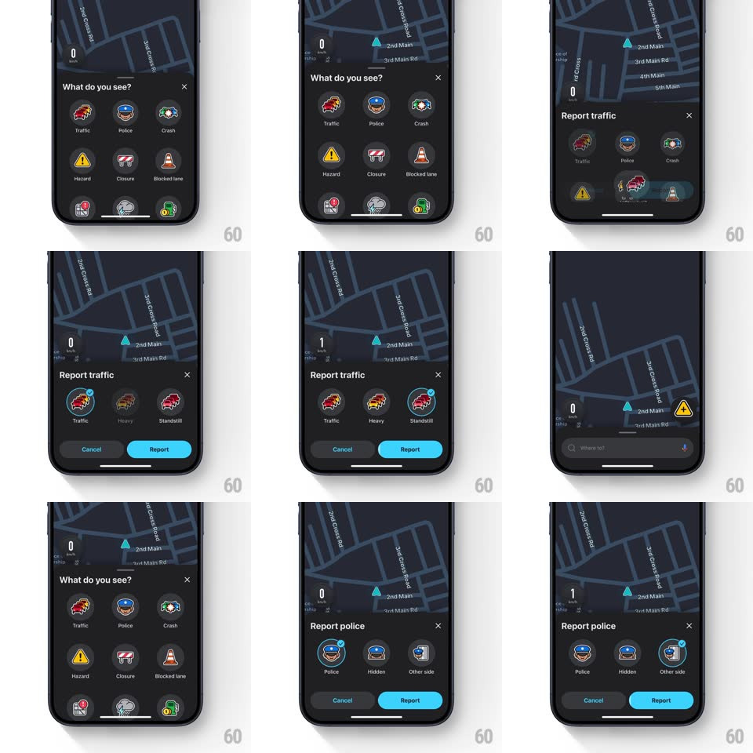

Media
Frame-by-frame

Rebuild this interaction 1:1: Waze's report flow - the "What do you see?" icon grid morphs into a focused horizontal carousel when you pick a category, with Cancel and Report appearing below.

Rebuild this interaction 1:1: Waze's report flow - the "What do you see?" icon grid morphs into a focused horizontal carousel when you pick a category, with Cancel and Report appearing below.
## Integration
Integration: stack-agnostic spec - springs given as stiffness/damping, timed motions as duration + curve; map every value to your framework and animation library of choice.
## Scene
Over the dark map, a bottom sheet asks "What do you see?" with a 3x3 grid of round report icons (Traffic, Police, Crash, Hazard, Closure, Blocked lane, Map issue, Bad weather, Gas prices). Picked state: a slimmer sheet - "Report traffic" - with three big icons in a horizontal row (Traffic, Heavy, Standstill), the selected one ringed in blue with a check badge, plus Cancel and a blue Report pill.
## Motion spec
Pattern: grid-to-carousel focus morph.
- Tap a grid icon: the tapped icon lifts (scale 1 to 1.1, 150ms) with a haptic while its eight siblings scatter-fade (scale to 0.7 + fade, 200ms, radiating stagger from the tap point).
- The sheet's title crossfades ("What do you see?" to "Report traffic", 200ms) and the sheet height tweens down to the slimmer variant (250ms, ease-in-out).
- The category's sub-type icons slide in as a horizontal carousel (translateX from right, spring ~360/24, staggered 50ms), the tapped category's icon flying from its grid position into the first carousel slot (shared-element flight, spring ~340/22).
- Selecting a sub-type: the blue ring draws around it (stroke reveal, 200ms) and the check badge pops on (scale 0 to 1, spring ~440/20, haptic); the previous selection's ring retracts.
- Report pill enables with the first selection (opacity 0.5 to 1, 150ms) and presses with scale 0.95; Cancel deflates the sheet back to the full grid (exact reverse choreography).
## Calibration
- Icons stay large and tappable in both states; the carousel holds 3 visible with more scrollable.
- The map behind keeps its slow idle drift the whole time - the sheet floats above a live map.
## Reduced motion
Grid crossfades to carousel; no flights.
## Don't miss
- The tapped icon's flight from grid to carousel is the anchor - don't rebuild it as a fresh icon.
- Sub-type icons are bigger than grid icons; the scale-up is part of the focus.